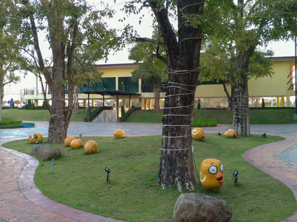
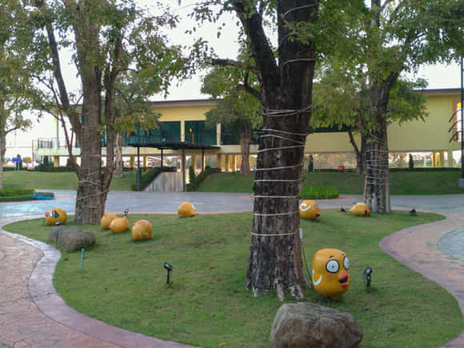
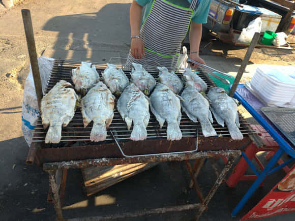
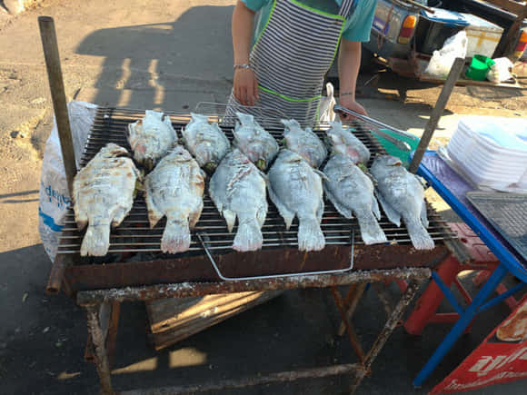

今次呢個行程整體都係住別墅屋；旅舍；渡假屋， 地方比平時住酒店係大好多，有啲仲有埋露台，我哋洗衫要曬衫好方便，因為今次嘅旅程總共係20日， 好彩係夏天啲衫薄啲細件啲容易乾啲。
住宿方面呢度啲房間都好寬闊, 有啲仲有露台有騎樓添,唔一定價錢貴先至大,視乎嗰間賓館點樣做,但係有樣嘢係一般都唔供應護髮素沐浴露,牙膏牙刷都冇供應嘅,不過我哋都有自備， 可能呢度熱帶地方啦，熱水供應就麻麻地啦!


 


今次多咗住鄉村地方， 見到田園山水；小動物；公雞母雞小雞都見多咗， 原來啲公雞係日叫夜叫，唔係真係為咗叫人起身嘅。


因為呢度消費比較低，所以容易啲揀餐廳食飯， 買嘢幾乎係唔需要考慮價錢， 自由自在好多。
其實泰國餐牌都唔使點睇啦,多數都係炒飯炒河粉, 一係就燒烤, 一係就火鍋， 西餐就食漢堡包, 鋸扒我就覺得味道麻麻啦，不過 呢度D西餐 pizza 同埋意粉， 味道都唔錯， 價錢畀佢食炒飯就貴兩三倍啦， 就算係貴兩三倍其實都平過喺香港食嘅。


 

我發覺泰國個個人都笑笑口㗎喎,唔知係咪生活簡單無壓力呢,啲做飲食嘅態度又係好好㗎,成日多謝前多謝後架sawadika喎!好得意喎連啲狗都係好客氣㗎,我哋去行山睇完夜景落山, 條路比較暗，我哋用手機個電筒照明,山上面隻狗呢就成日喺我哋前面好似帶路,一路係咁 帶到我哋落山佢先至肯停低， 真係好盡責， 其實冇人要求佢咁做㗎， 我哋之前都冇請佢食嘢, 嗰隻狗都咁熱心招呼,真係好難得。

泰國食嘢買嘢啲店主都好客氣,當你大老細咁招呼,買唔買佢都笑笑口嘅! 尤其是食飯嘅地方,唔會有人趕住你要食完結帳走,所以食得好舒服好有度假feel !
今次旅程去咗幾個府,唯一我最討厭亦都唔會再嚟嘅係拜城”Pai City”, 一落車見到滿街啲遊客都揸住口煙,我估除咗吸煙人民喜歡呢達地方因為可以隨便食煙之外,街上飛車黨電單車私家車交通車,甚至乎步行街都滿載著車來車往,對於我哋步行者係十分討厭嘅,而且呢度啲車冇之前幾個府咁斯文禮讓,個個都係好似趕住去機場咁嘅款,縱橫交錯我實在適應唔到,仲要喺度住兩晚㖭真係痛苦!呢個拜城仲被譽為浪漫之城，我實在不懂欣賞! 我旅遊過都唔少地方， 唯一呢個地方我係同自己講唔會再來拜城，呢個城足以影響我成個旅程既喜悅, 所以聽返嚟嘅同自己實際去經歷嘅係完全兩回事， 或者我唔係哪一類人吧!


泰國有許多地方值得欣賞同渡假嘅,我是會重遊的，但不包括PAI City!
清邁係好熱鬧嘅地方,好多嘢買好多嘢食,人來人往非常之多遊客,略嚴太過熱鬧失去渡假想安靜啲休息吓嘅感覺! 整體嚟講泰國都係一個好好玩嘅地方， 而且好經濟，買嘢又唔貴，食嘢有平有貴, 中式西式泰式，日式韓式，式式俱備。